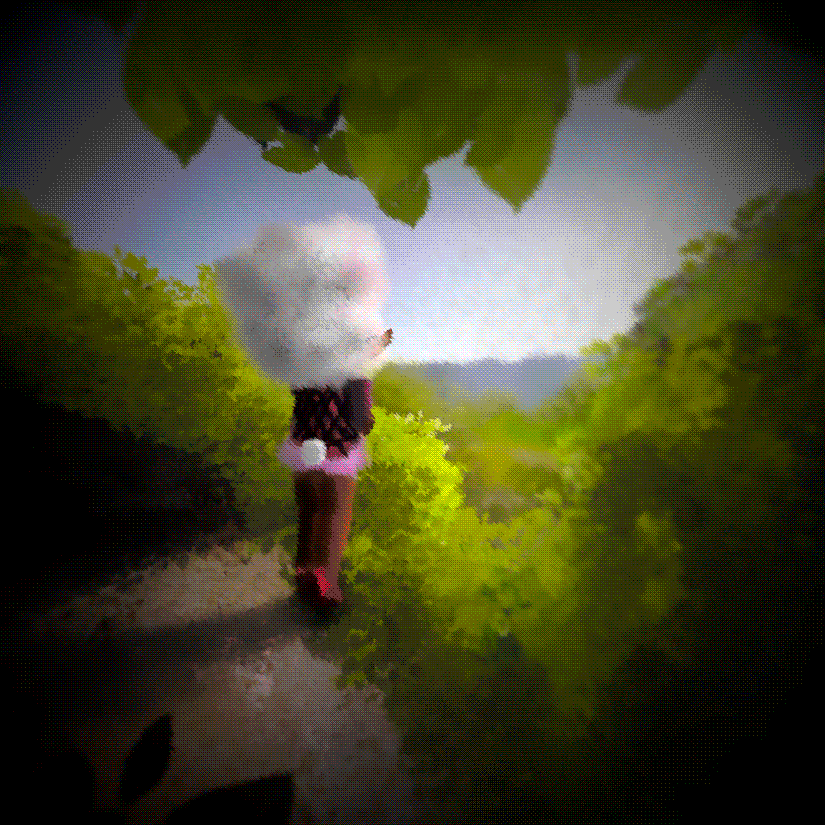
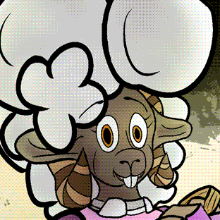

About TPWW
TPWW explores the journey of growing up through the lens of adorable animals. Each path represents different challenges and experiences that shape us.

Set in a world where anthropomorphic woodland creatures navigate life's ups and downs, TPWW follows the escapades of one once-lamb named Bo who sets off from her family's cozy farmstead in the rural town of Merritown on her first day of proper work after graduating from school.
Having received a letter from her doe friend, Ginni, who has spent the past year working at the mysterious and somewhat ominous Saccharine Fields researching the local ARBOR, Bo begins her journey to the Fields, where after finding the train there is apparently out of service, starts down the path to the Fields herself.
But as tiring as Bo might find this hike, she has no idea just how daunting her trek to the Fields will be. Or how dangerous.
Meet Bo!

Bo Lanolidaughter might well have seen every nook and cranny of her Uncle Sonny and Auntie Woolie's ranch, but she has never been one to shy away from adventure. She fashions herself a kind of renaissance lamb, always eager to explore and discover new things.
At a crisp nine-teen years of age, and a few months removed from graduation, she faces the daunting prospect of figuring out what exactly it is that life has in store for her. She's tried her hands and hooves at tilling the field, hiking the hills, and mastering academia at the academy. She's even dabbled in the arts and journaling, but nothing has ever quite stuck.
When she finally gets the opportunity to scratch a persistent itch -- that nagging feeling -- to see the mythical ARBOR at the Saccharine Fields, and reconnect with her best friend, she can barely keep her cousin's satchel around her shoulders as she bids farewell to Uncle and Auntie in the early morning light and sets off on her journey.
If only she didn't.